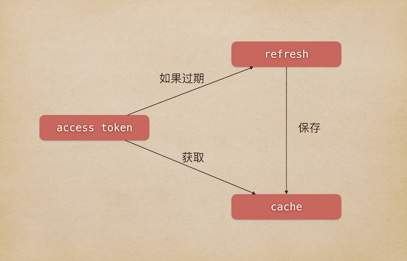

开发之前
- 得有一台自己的服务器（我用的是阿里云服务器）
- 做好相关的开发配置（我用的是
Apache + Python + MySql，用了Python的Webpy框架）
申请测试账号
因为不是每个都有一个公众号，就算有，也不能什么测试都在上线的公众号上进行。基于安全和不影响正式环境的考虑，我们可以申请一个微信公众平台接口测试帐号来进行开发测试。
申请链接：微信公众平台接口测试帐号
只需要用自己的微信扫一扫即可申请，并且会一直保留，下次扫码进入也会保留上次的设置。
大多数接口跟正式号没什么不同，但我在开发中也遇到过有些接口有限制的地方。我开发会员卡功能的时候就遇到过，这里不过多描述，当写到具体的地方会进行相关的提醒。
配置测试号
进入后，会有以下几大类：
- 测试号信息
包含appID和appsecret，同正式公众号管理页里开发-基本配置-公众号开发信息的开发者ID(AppID)和开发者密码(AppSecret)（需要管理员扫码生成，生成后只能重置不能查看已生成的，妥善保管），需要记录下来，后续开发会用到。
- 接口配置信息
包含URL和Token，虽然保存后显示有修改按钮，但我修改时是改不了的，所以配置时要注意。这里的Token是自定义的，不是access_token。
因为入门指引使用的也是Webpy，如果你也是使用这个框架，你可跟着上面的代码进行配置。
在填写上面两个参数时，需要你先配置好服务器，并做好相应的代码设置。比如根据上面入门指引，你需要把handle.py文件的token = "xxxx"改成你填写的Token才能配置成功，不然会显示配置失败。
- JS接口安全域名
域名：自己服务器的域名，你向微信发送请求时，会验证的，如果域名不匹配是无法获取数据的。不需要天http或https前缀。可以多次修改，可以填服务器的IP地址。
- 测试号二维码
查看测试公众号的二维码，扫码可以进行关注，并且可以看到关注的用户列表。
- 模板消息接口
配置一些消息模板，后续会讲到。
- 体验接口权限表
这里并没有列出全部的接口，比如卡券接口，不要被此列表所迷惑。
开始开发
在入门指引中，已经有比较详细的开发引导，我这里代码相关的东西大多是重复内容。
微信开发里，几乎所有接口都会涉及到一个东西：access_token，本文讲完如何获取、保存access_token就结束。
根据微信官方文档介绍:获取access_token:
access_token是公众号的全局唯一接口调用凭据，公众号调用各接口时都需使用access_token。开发者需要进行妥善保存。access_token的存储至少要保留512个字符空间。access_token的有效期目前为2个小时，需定时刷新，重复获取将导致上次获取的access_token失效。
公众平台的API调用所需的access_token的使用及生成方式说明：
- 建议公众号开发者使用中控服务器统一获取和刷新Access_token，其他业务逻辑服务器所使用的access_token均来自于该中控服务器，不应该各自去刷新，否则容易造成冲突，导致access_token覆盖而影响业务；
- 目前Access_token的有效期通过返回的expire_in来传达，目前是7200秒之内的值。中控服务器需要根据这个有效时间提前去刷新新access_token。在刷新过程中，中控服务器可对外继续输出的老access_token，此时公众平台后台会保证在5分钟内，新老access_token都可用，这保证了第三方业务的平滑过渡；
- Access_token的有效时间可能会在未来有调整，所以中控服务器不仅需要内部定时主动刷新，还需要提供被动刷新access_token的接口，这样便于业务服务器在API调用获知access_token已超时的情况下，可以触发access_token的刷新流程。
公众号和小程序均可以使用AppID和AppSecret调用本接口来获取access_token。AppID和AppSecret可在“微信公众平台-开发-基本配置”页中获得（需要已经成为开发者，且帐号没有异常状态）。调用接口时，请登录“微信公众平台-开发-基本配置”提前将服务器IP地址添加到IP白名单中，点击查看设置方法，否则将无法调用成功。小程序无需配置IP白名单。
大概意思就是，不要每次都重复获取，要保存这个access_token，目前有效期为2小时，快过期时需要提前刷新，或者在过期后有相应的机制刷新。
因为我没找到python缓存这方面合适的库，我就自己写了一个简单的缓存类。
1 | # coding:utf-8 |
line 22，初始化类，这里我用的文件来保存数据，默认保存在目录/tmp/cache/data下面，需要修改读写权限（我设置的777），不然无法写入。
line 34~42根据key获取缓存数据，line 39判断是否过期，过期的话返回None。
line 44~52保存数据。expire有效期（秒）
因为最近也接触过一些php框架，在php的CodeIgniter或Laravel中都有现成的方法可以使用。
Laravel:1
2
3Cache::put($key, $accessToken, $expire);
Cache::get($key);
CodeIgniter:1
2
3
4
5
6
7
8
9//在Controller的__construct中初始化
$this->load->driver(
'cache',
array('adapter' => 'apc', 'backup' => 'file', 'key_prefix' => 'wechat_')
);
//使用
$this->cache->save($key, $accessToken, $expire);
$this->cache->get($key);
主要就是这两个函数。然后我根据官方提供的basic.py代码进行改造：
1 | # -*- coding: utf-8 -*-# |
line 16这里我把key设置为wx_access_token_[appid]，保存的路径就为/tmp/cache/data/wx_access_token_[appid]
line 17初始化WelCache类。
line 19~27真正获取access_token的地方，也就是刷新。
line 29~34获取access_token，如果不存在access_token就调用__real_get_access_token进行刷新。

下面是配置文件，填上自己申请的公众号信息。
1 | # coding:utf-8 |
最后在自己的路由管理页面（我是index.py）：1
2
3
4
5
6
7
8
9
10
11
12
13
14
15
16
17
18# coding:utf-8
# filename: index.py
import os
import sys
wk_dir = os.path.dirname(os.path.realpath(__file__))
sys.path.append(wk_dir)
import web
from basic import Basic
class Test:
def GET(self):
return Basic().get_access_token()
urls = (
'/', 'Test'
)
application = web.application(urls, globals()).wsgifunc()
最后访问自己网站即可，刷新几次也是同样的access_token，如果要看有效期是否生效，可以保存的时候设置一个几秒的过期时间。